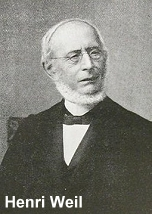
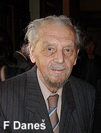
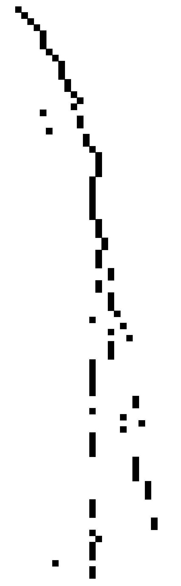

|
The theme-rheme business was sparked off in 1844 when Henri Weil made the following observation:  "There is then a point of departure, an initial notion which is equally present to him who speaks and to him who hears, which forms, as it were, the ground upon which the two intelligences meet; and another part of discourse which forms the statement (l'énonciation), properly so called. This division is found in almost all we say." (Weil 1844: 29) Since then, many linguists, particularly those from the Prague school, have shed new light on the message structure of the clause. The Hallidayan framework owes much to the work of the Prague school linguists. An excellent summary of the Prague school heritage is given in de Beaugrande (1991a, b). The Prague school and Hallidayan approaches to linguistics are compared in Davidse (1987). These readings are not obligatory, but you may want to have a quick look at them ... just to make me happy. In a nutshell, this is what you need to know about theme:
And so ... given an English clause, the theme always comes first. It is always theme first, followed by rheme. The thematic portion is a bit more complicated. It can have as many as three different theme types:
Now, the tricky bit is in deciding where theme ends and rheme starts. To help you along, here's the golden rule: In the clause, you start at the beginning and keep on searching until you have found the topical theme. Once you've done that, you have your thematic portion. Everything else after the topical theme is rheme. The thematic portion, therefore, is everything from the start of the clause up to, and including, the topical theme. To dampen things a little, here's an itsy-bitsy problem. You'll need to make an exception where marked themes are concerned. It is possible for the thematic portion to contain more than one topical theme, provided all the topical themes in the thematic portion are marked. More on this later. (But click here if you're in a hurry.) Everyone still with me? Good ... let's begin with the easy stuff. Now remember, you need to start at the beginning of the clause. If you encounter any of the following:
label them as textual themes. As indicated in the table above, make a slight exception for wh-relatives. They are both textual theme and topical theme rolled into one. Going by the golden rule, if you have a clause initiated by a wh-relative (which is both a textual and topical theme), everything else after the wh-relative would be rheme. Consider, for example, the relative clause below:
Moving on, suppose you next encounter the following:
These are all to be labelled as interpersonal themes. Again, make an exception for wh-question words. These are both interpersonal theme and topical theme squeezed into one. Hence, a question like the one below should be analysed this way:
And finally, label the first participant (usually NG), circumstance (usually PP or AdvG), or process (VG) as topical theme. Once you've done that, you have your thematic portion of the clause. Here's a simple example with all three types of themes:
One last thing for this section. Please note that topical themes are obligatory for all main clauses (including imperatives). The other theme types (textual and interpersonal) are optional. Since topical themes are obligatory, you need to take care to include everything at the beginning of the clause for analysis. This means that, sometimes, you may even need to recover ellipsed elements. For example, in: Superman bit Mr Bean, and was sorry about it. we have two clauses: "Superman bit Mr Bean" + "and was sorry about it" The topical theme of the first clause is easy to pick out—it's "Superman" (right?). What about the second clause? Well, "and" is a textual theme, but—surprise, surprise—the topical theme isn't the verb "was" (so be careful not to make this mistake). If you think about it carefully, the full clause should actually be: "and (he) was sorry about it" where "he" is the ellipsed topical theme. We indicate ellipsed topical themes within brackets, as in:
Here is another example, where the two clauses are separated by the double-slash mark //:
By markedness is meant that the occurrence of some phenomenon is less typical or frequent. Hence, when we say that a theme is marked, we are saying that it is less typical or frequent for it to be realised that way. And the opposite for unmarked themes. Now, whenever we talk about marked or unmarked themes, we are referring only to the topical theme, not the textual or interpersonal theme. And I'm sure you'd have realised by now that decisions on whether a particular topical theme is marked or not depends on the clausal mood (that is, whether the clause is a declarative, interrogative, or imperative). The important point to note is that unmarked themes are different for different clausal moods. A common mistake made by many students is to say that the unmarked theme is the subject. That is only partly true for declaratives, and specific types of interrogatives and imperatives, but not for all clauses in general. Let's now see what the unmarked themes are like for different clausal moods: Declaratives: The unmarked theme is the subject, as in: "Snow White picked her boyfriend's nose energetically." All other realisations of topical themes are marked, for example: "Her boyfriend's nose, she loves to pick" (here, the complement, rather than the subject, is the topical theme). Interrogatives: For interrogatives, we need to separate polar from content interrogatives:
Imperatives: Like interrogatives, we also need to make a distinction between two types of imperatives—inclusive and exclusive imperatives.
It may now dawn on you that topical themes realised by circumstantial elements are always marked, without exception. So whenever you see a circumstantial element functioning as a topical theme, don't think twice—it's marked. Not all marked themes, however, are the same. They differ in terms of the extent of markedness. You'd agree, for example, that (a) is far less typical than (b), and in this respect, more marked:
Remember the golden rule above? Now, consider the example below: Yesterday, behind the school building, six feet underground, Alvin found his thesis. If we go strictly by the golden rule, then only Yesterday would be analysed as the topical theme. The rest of the clause, from behind the school building onwards, would be the rheme. But this doesn't seem quite correct. Some linguists, such as Martin (1995), have proposed a more intuitively appealing approach by regarding all marked themes in such instances as topical themes. If so, the thematic portion above wouldn't simply be Yesterday, but Yesterday, behind the school building, six feet underground. Such an approach makes sense in terms of the broader characterisation of theme as the point of departure, since the additional marked themes function to lay the ground and prepare for the message within the clause to properly take off. Remember, though, that this exception to the golden rule applies only to marked themes.  Once you're able to analyse clauses for theme and rheme, this whole text business will become a stroll in the park for you. All you need to look out for is how the themes are patterned or grouped, and how they are developed in the unfolding of the text. In looking at the thematic progression of the text, it is usual to look at the topical themes of the main clauses only. [Why? That's because subordinate clauses are always dependent on the main clause and add little to the main idea(s) of the text.] The work of Daneš (1970, 1974) is particularly insightful in this regard. What Daneš did was to look at how the themes of clauses progressed through the text, and he identified various patterns of thematic progression (TP). Two of the more common ones are presented below: Constant TP
Simple linear TP
 How do I draw TP diagrams? With a great deal of patience ... and hair-pulling. But I've come up with a template, using Microsoft Excel, to draw simplified TP diagrams relying on only topical themes (see the frightening diagram on your right if you don't believe me). These diagrams have appeared in Leong (2015, 2016), and allow you to discern the broad thematic structure of the text more easily. If you want this template, click here. Otherwise, just read the next point directly below. Must all clauses have a topical theme? Nope. As pointed out earlier, topical themes are obligatory only for main clauses (including imperatives). Non-finite subordinate clauses can be without topical themes due entirely to their structural compactness. Look out, though, for the subject in NF clauses. If it's there, you have a topical theme, but not otherwise. So in a clause such as "after hearing how loudly he sang", we have only a textual theme (after), but no topical theme. On the other hand, the NF clause "his singing having hurt their eardrums ..." has a topical theme (his singing). |
Page-internal links
Basic stuff (Un)marked themes Multiple marked themes Looking at the text Two last things Online quiz Gimme the template! References
de Beaugrande, R. (1991a). The heritage of functional sentence perspective from the standpoint of text linguistics (1). Linguistica Pragensia, 34(1), 2-26.
|
||||||||||||||||||||||||||||||||||||||||||||||||||||||||||||||||||||||